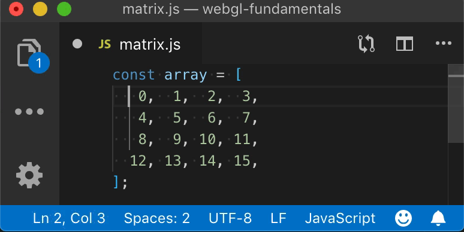
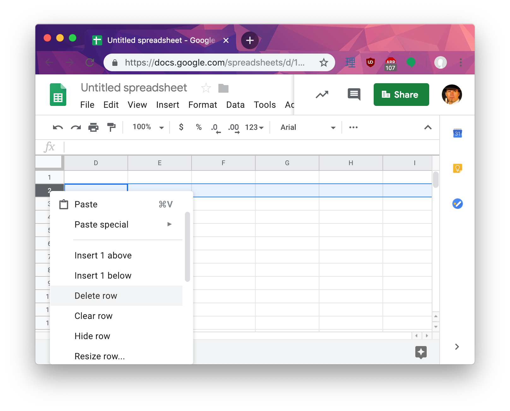
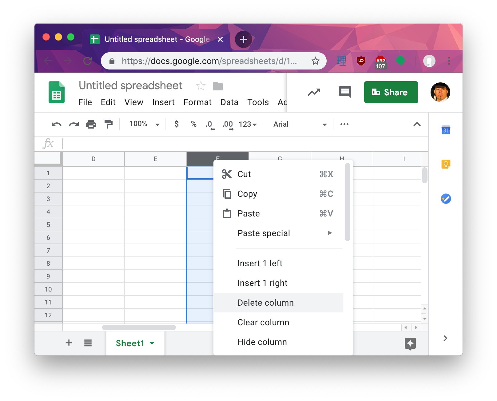

Cet article est un aparté des différents articles qui parlent des matrices en particulier l’article qui introduit les matrices mais aussi l’article qui introduit la 3D, l’article sur la projection en perspective, et l’article sur les caméras.
En programmation généralement une ligne va de gauche à droite, une colonne va de haut en bas.
col·umn (colonne)
/ˈkäləm/
nom
un pilier vertical, typiquement cylindrique et fait de pierre ou de béton, supportant un entablement, une arche, ou une autre structure ou se tenant seul comme monument.
synonymes : pilier, poteau, pôle, montant, vertical, …
une division verticale d’une page ou d’un texte.
row (ligne)
/rō/
nom
- une ligne horizontale d’entrées dans un tableau.
Nous pouvons voir des exemples dans nos logiciels. Par exemple mon éditeur de texte montre les lignes et colonnes, lignes étant un autre mot pour ligne dans ce cas puisque colonne est déjà pris

Remarquez dans la zone inférieure gauche que la barre d’état affiche la ligne et la colonne.
Dans un logiciel de tableur, nous voyons les lignes aller de gauche à droite

Et les colonnes descendent.

Donc, quand nous créons une matrice 3x3 ou 4x4 en JavaScript pour WebGL nous les créons comme ceci
const m3x3 = [
0, 1, 2, // ligne 0
3, 4, 5, // ligne 1
6, 7, 8, // ligne 2
];
const m4x4 = [
0, 1, 2, 3, // ligne 0
4, 5, 6, 7, // ligne 1
8, 9, 10, 11, // ligne 2
12, 13, 14, 15, // ligne 3
];
Clairement en suivant les conventions ci-dessus la première ligne de m3x3 est 0, 1, 2 et la dernière ligne de m4x4 est 12, 13, 14, 15
Comme nous le voyons dans le premier article sur les matrices, pour créer une matrice de translation 2D 3x3 WebGL assez standard, les valeurs de translation tx et ty vont dans les emplacements 6 et 7
const some3x3TranslationMatrix = [
1, 0, 0,
0, 1, 0,
tx, ty, 1,
];
ou pour une matrice 4x4 qui est introduite dans le premier article sur la 3D, la translation va dans les emplacements 12, 13, 14 comme dans
const some4x4TranslationMatrix = [
1, 0, 0, 0,
0, 1, 0, 0,
0, 0, 1, 0,
tx, ty, tz, 1,
];
Mais, il y a un problème. Les conventions mathématiques pour les calculs matriciels font généralement les choses en colonnes. Un mathématicien écrirait une matrice de translation 3x3 comme ceci
et une matrice de translation 4x4 comme ceci
Cela nous laisse avec un problème. Si nous voulons que nos matrices ressemblent à des matrices mathématiques, nous pourrions décider d’écrire une matrice 4x4 comme ceci
const some4x4TranslationMatrix = [
1, 0, 0, tx,
0, 1, 0, ty,
0, 0, 1, tx,
0, 0, 0, 1,
];
Malheureusement, le faire de cette façon pose des problèmes. Comme mentionné dans l’article sur les caméras, chacune des colonnes d’une matrice 4x4 a souvent une signification.
Les première, deuxième et troisième colonnes sont souvent considérées comme les axes x, y et z respectivement et la dernière colonne est la position ou la translation.
Un problème est que dans le code, il ne serait pas amusant d’essayer d’obtenir ces parties séparément. Vous voulez l’axe Z ? Vous devriez faire ceci
const zAxis = [
some4x4Matrix[2],
some4x4Matrix[6],
some4x4Matrix[10],
];
Beurk !
Donc, la façon dont WebGL, et OpenGL ES sur lequel WebGL est basé, contourne cela est qu’il appelle les lignes “colonnes”.
const some4x4TranslationMatrix = [
1, 0, 0, 0, // ceci est la colonne 0
0, 1, 0, 0, // ceci est la colonne 1
0, 0, 1, 0, // ceci est la colonne 2
tx, ty, tz, 1, // ceci est la colonne 3
];
Maintenant cela correspond à la définition mathématique. En comparant à l’exemple ci-dessus, si nous voulons l’axe Z, tout ce que nous avons à faire est
const zAxis = some4x4Matrix.slice(8, 11);
Pour ceux qui connaissent C++, OpenGL lui-même nécessite que les 16 valeurs d’une matrice 4x4 soient consécutives en mémoire donc en C++ nous pourrions créer une struct ou classe Vec4
// C++
struct Vec4 {
float x;
float y;
float z;
float w;
};
et nous pourrions créer une matrice 4x4 à partir de 4 d’entre elles
// C++
struct Mat4x4 {
Vec4 x_axis;
Vec4 y_axis;
Vec4 z_axis;
Vec4 translation;
}
ou simplement
// C++
struct Mat4x4 {
Vec4 column[4];
}
Et cela semblerait simplement fonctionner.
Malheureusement cela ne ressemble en rien à la version mathématique quand vous en déclarez une statiquement dans le code.
// C++
Mat4x4 someTranslationMatrix = {
{ 1, 0, 0, 0, },
{ 0, 1, 0, 0, },
{ 0, 0, 1, 0, },
{ tx, ty, tz, 1, },
};
Ou en revenant à JavaScript où nous n’avons généralement pas quelque chose comme les structs C++.
const someTranslationMatrix = [
1, 0, 0, 0,
0, 1, 0, 0,
0, 0, 1, 0,
tx, ty, tz, 1,
];
Donc, avec cette convention d’appeler les lignes “colonnes”, certaines choses sont plus simples mais d’autres peuvent être plus déroutantes si vous êtes un mathématicien.
Je soulève tout ceci parce que ces articles sont écrits du point de vue d’un programmeur, pas d’un mathématicien. Cela signifie que comme tout autre tableau unidimensionnel qui est traité comme un tableau bidimensionnel, les lignes vont de gauche à droite.
const someTranslationMatrix = [
1, 0, 0, 0, // ligne 0
0, 1, 0, 0, // ligne 1
0, 0, 1, 0, // ligne 2
tx, ty, tz, 1, // ligne 3
];
tout comme
// image de visage souriant
const dataFor7x8OneChannelImage = [
0, 255, 255, 255, 255, 255, 0, // ligne 0
255, 0, 0, 0, 0, 0, 255, // ligne 1
255, 0, 255, 0, 255, 0, 255, // ligne 2
255, 0, 0, 0, 0, 0, 255, // ligne 3
255, 0, 255, 0, 255, 0, 255, // ligne 4
255, 0, 255, 255, 255, 0, 255, // ligne 5
255, 0, 0, 0, 0, 0, 255, // ligne 6
0, 255, 255, 255, 255, 255, 0, // ligne 7
]
et donc ces articles y feront référence en tant que lignes.
Si vous êtes un mathématicien, vous pourriez trouver cela déroutant. Je suis désolé, je n’ai pas de solution. Je pourrais appeler ce qui est clairement la ligne 3 une colonne mais cela serait également déroutant car cela ne correspond à aucune autre programmation.
En tout cas, j’espère que cela aide à clarifier pourquoi aucune des explications ne ressemble à quelque chose tiré d’un livre de mathématiques. Au lieu de cela, elles ressemblent à du code et utilisent les conventions du code. J’espère que cela aide à expliquer ce qui se passe et que ce n’est pas trop déroutant pour ceux qui sont habitués aux conventions mathématiques.